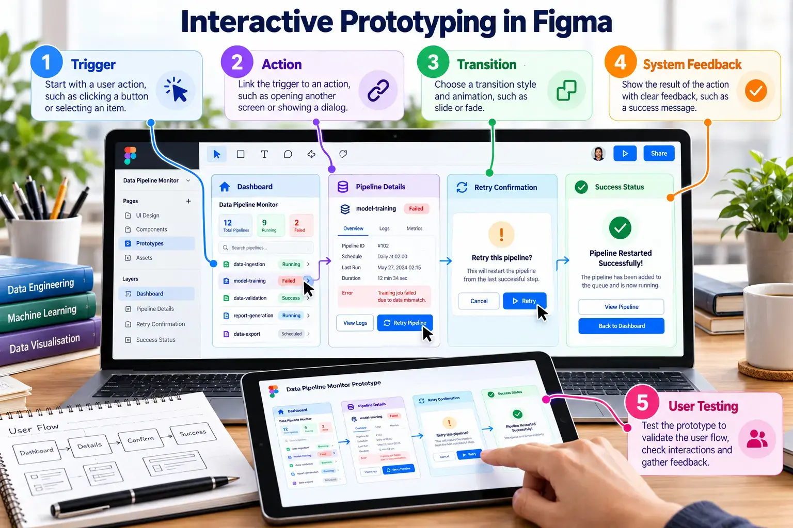
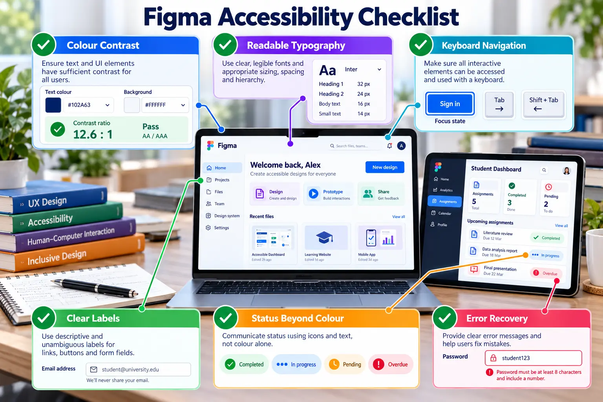

A prototype should demonstrate a complete user task
Meaningful prototypes communicate navigation, system state, feedback, error recovery and completion.

Prototype interactions
TriggerClick, hover, drag, delay or keyboard input.
ActionNavigate, open overlay, change to, scroll or go back.
StateDefault, loading, success, warning, error or disabled.
FeedbackShow that the system received and processed an action.
Conduct a five-minute usability test
Give one realistic task
Ask a classmate to recover a failed pipeline without explaining the interface.
Observe without coaching
Record completion, hesitation, wrong clicks, unclear labels and missing feedback.
Improve the prototype
Revise at least three issues and document the reason for each change.

Accessibility check
- Do not communicate status through colour alone.
- Use readable text and sufficient contrast.
- Provide meaningful labels and logical navigation order.
- Make errors understandable and recoverable.
- Use consistent component names and layer order.